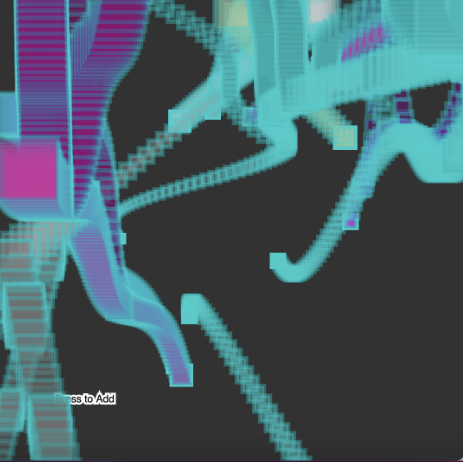
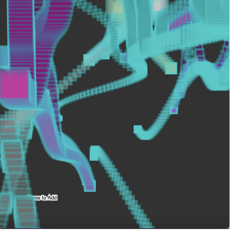

Process Checkpoints: Object

Process Checkpoints: Executable

Sketch: Spacial Spiral Squares
Project A: Code , Fullscren , Documentation
Spacial Spiral Squares is an interactive generative art that depicts a conceptual world of squares growing like a tree. My original project proposal was to have a long visual of squares starting at the bottom right corner growing in a spiral motion into the center of the canvas, and then breaking into multiple new branches. Nevertheless, with the various different challenges and surprises when I was coding this project. I changed my project into squares, coming from the center, enlarging outward away from the center with one new path branching from it. I did so because of the frame order and how it visually looked better. I could not make more branches grow out using the recursive loop because it kept overloading the system. For this reason, I made it so that the square spirals could only grow one branch at random times. The final work reminds me of the multiple paths we could take in life. Each spiral represents a path that could diverge into other paths or intersect with others. Depending on the individual’s choice, they lead different lives. The colors in this artistic work can represent the different styles in life; for instance, a hardworking life, a tranquil life, a happy life, or a dark life. It all comes down to choices and how an individual confronts a problem in life. Although they all lead in different directions, they all root out of the same place.
Process Checkpoints: Object
Process Checkpoints: Executable
